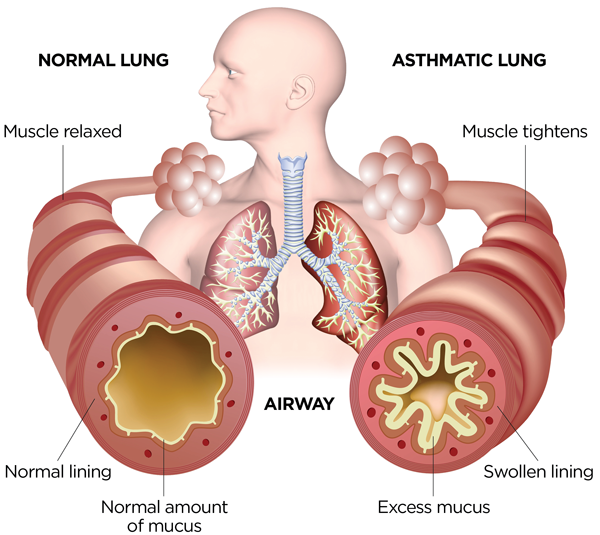

Asthma

CAUSES
Researchers don’t know why some people have asthma while others don’t. But certain factors present a higher risk:
- Allergies: Having allergies can raise your risk of developing asthma.
-
Environmental factors: People can develop asthma after exposure to things that irritate the airways. These substances include allergens, toxins, fumes and second- or third-hand smoke. These can be especially harmful to infants and young children whose immune systems haven’t finished developing.
-
Genetics: If your family has a history of asthma or allergic diseases, you have a higher risk of developing the disease.
-
Respiratory infections: Certain respiratory infections, such as respiratory syncytial virus (RSV), can damage young children’s developing lungs.
SYMPTOMS
People with asthma usually have obvious symptoms. These signs and symptoms resemble many respiratory infections:
- Chest tightness, pain or pressure.
-
Coughing (especially at night).
-
Shortness of breath.
-
Wheezing.
DIAGNOSIS
Your healthcare provider will review your medical history, including information about your parents and siblings. Your provider will also ask you about your symptoms. Your provider will need to know any history of allergies, eczema (a bumpy rash caused by allergies) and other lung diseases.
Your provider may order spirometry. This test measures airflow through your lungs and is used to diagnose and monitor your progress with treatment. Your healthcare provider may order a chest X-ray, blood test or skin test.
TREATMENTS
You have options to help manage your asthma. Your healthcare provider may prescribe medications to control symptoms. These include:
- Bronchodilators: These medicines relax the muscles around your airways. The relaxed muscles let the airways move air. They also let mucus move more easily through the airways. These medicines relieve your symptoms when they happen and are used for intermittent and chronic asthma.
-
Anti-inflammatory medicines: These medicines reduce swelling and mucus production in your airways. They make it easier for air to enter and exit your lungs. Your healthcare provider may prescribe them to take every day to control or prevent your symptoms of chronic asthma.
-
Biologic therapies for asthma: These are used for severe asthma when symptoms persist despite proper inhaler therapy.